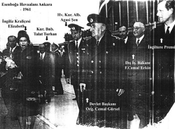

Esenboğa Havaalanı, Ankara, 1961
İngiltere Kraliçesi Elizabeth, Uzakdoğu seyahati dönüşü kısa bir süre meydanda, Devlet Başkanı Org. Cemal Gürsel’le görüşmüş, Adnan Menderes’in idam edilmemesini istemişti. İngiliz istihbaratı kraliçeyi fena halde yanıltmıştı. Çünkü, Gürsel’in bu konuda ne yetkisi ne de gücü vardı.